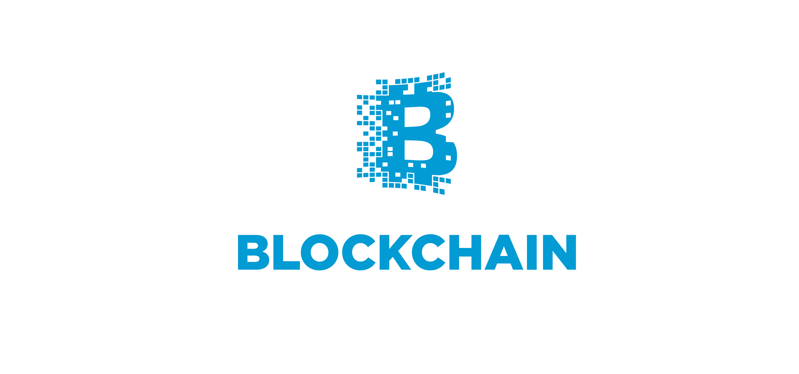

Learn how to use Oracle Blockchain in 10 minutes
Purpose:
The Oracle BlockChain Cloud Service is built on the open source HyperLedger Fabric. The quick demo below will help you set up a “Hyperledger Composer Playground” which can be used to model, test and implement a business BlockChain network using the HyperLedger framework. In this particular example, we will set up a Marble Trading blockchain, create a number of marble assets and initiate a smart contract (a marble trade) between two Players.
Pre-requisites:
- An Oracle Linux Compute Instance with a public IP address
- Port 22 and 8080 permitted to the instance
- A basic understanding of standard Linux tools (eg. vi)
Process:
- SSH to your compute instance and login as user “opc”
- Edit the yum repo file and allow the addon repo to provide an index of available packages by typing “sudo vi /etc/yum.repos.d/public-yum-ol7.repo” and setting “enabled=1” under [ol7_addons]

- Install docker by typing “sudo yum install docker-engine”

- Type “y” to install the update package

5. Start the docker engine by running “sudo systemctl start docker”
6. Start the HyperLedger Composer Playground docker container by running “sudo docker run --name composer-playground --publish 8080:8080 hyperledger/composer-playground”:
This will pull the package down from the default docker repository and start it on port 8080.
- Now open a web browser and navigate to the public IP address of your compute instance on port 8080:

If the page doesn’t come up, check the security settings on your compute instance and ensure port 8080 is open.
- Click “Let’s Blockchain”

- Click “Deploy a new business network”
- Click “Create New”

10. Enter the following basic information:
11. Select “marbles-network” as the model network starter template:

12. Click “Deploy”

13. Click on “Connect now” under the newly created marble-trading network card:

14. Click on “Test” in the menu bar up the top

15. Click on “+ Create New Participant” on the “Player” page.

16. Enter the following JSON code in the popup window. Note: This would be the JSON you would POST to the RESTful API of a live HyperLedger fabric:

18. Repeat steps 15-17 with the following JSON data to create a second party:
We’ve now created 2 Marble Players who can own marbles.
19. Click on “Marble” under “Assets” in the left hand menu.

20. Click “+ Create New Asset”

21. Enter the following JSON, paying attention to the marbleId value:
22. Click “Create New"

23. Repeat steps 20-22 with the following JSON: 24. Repeat steps 20-22 with the following JSON:
24. Repeat steps 20-22 with the following JSON:
We’ve now created 3 marble assets with different attributes, 2 owned by Tom Walker, 1 owned by Sam Treacy. 25. Click on “All Transactions” in the left hand pane

You’ll see there are already a number of transactions listed – these represent the creation of our Players and Marble Assets. You can see the details by clicking on “view record”
26. We will now generate a smart contracting, transitioning ownership of a marble from Tom Walker to Sam Treacy. To do this, click on “Submit Transaction” in the left hand pane:

27. Enter the following JSON, noting that this will trade marble ID 0050 (currently owned by Tom Walker) to Sam Treacy:
28. Click “Submit”
29. Now click on “Marble” in the left hand pane:
And you should see that marble 0050 (the SMALL GREEN one) is now owned by Sam Treacy:
Congratulations, you’ve just set up a Business Blockchain, populated it with participants and assets, and committed an immutable transaction between two participants to the ledger!
18. Repeat steps 15-17 with the following JSON data to create a second party: